Then open the app, and select the "NEW" button.
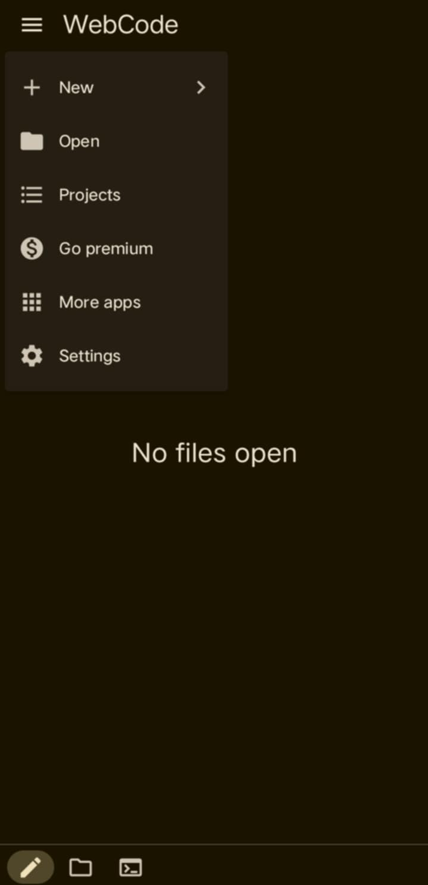
After selecting "NEW", select "HTML FILE".
Then, after selecting the HTML file,
create a file name for your file.
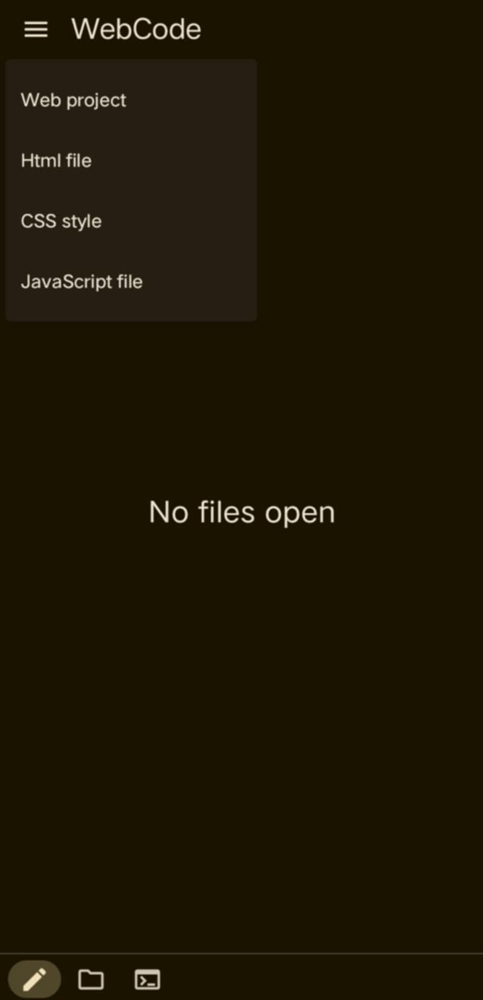
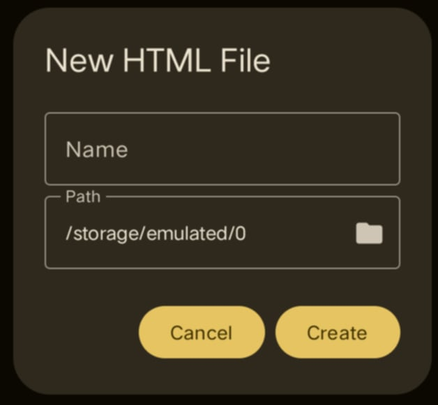
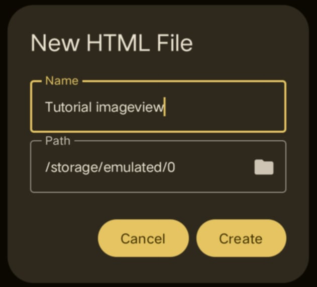
The next process is to select the PATH. After selecting this, you should have already
created an empty file/folder name, because this is where everything you might
put on your website will be placed.It should be in a single container/folder
so that the elements you will put on the website are easy to access.
Setting the PATH (Folder Location)
Here, you can see that I created an empty folder named Tutorialimageview.
This is the folder that should be selected as the PATH location to view
the pictures/images that will be used on the website.
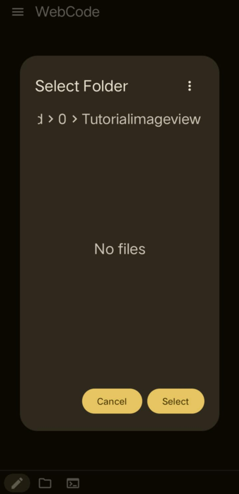

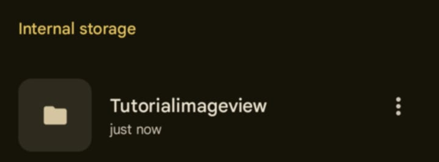
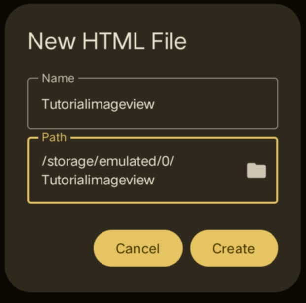
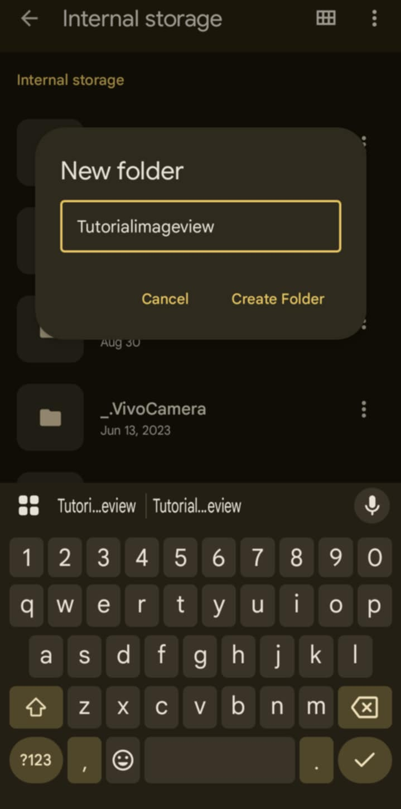
After that process, you can start building the website.
How do you make the images viewable on the website?
It's simple: find the pictures you want to put on the website by using the file manager or the Files by Google app.
Open the file manager or the Files app and look for the pictures to be placed on the website.
After finding the pictures to be placed on the website, tap the three dots “ ⋮ “ on the side of the image.
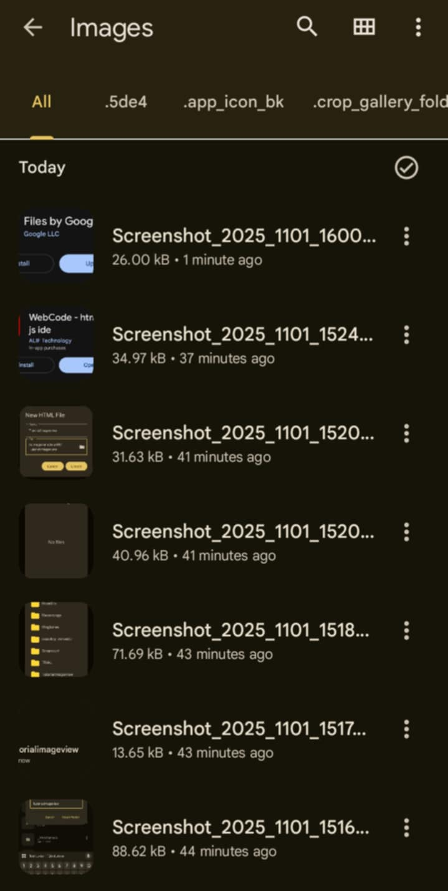
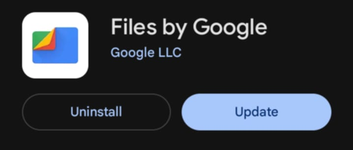
After tapping, a menu like this will appear:
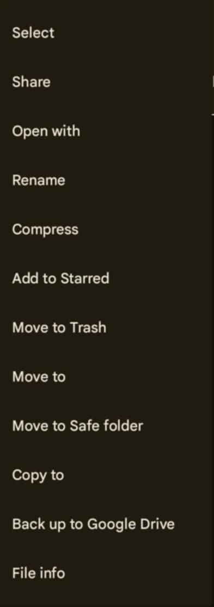
After copying the name of the picture, that will be the URL to be placed in the website code.
Select “ Move to “ and put the picture in the file/folder where you put your file code. Just like where I put mine, named “Tutorialimageview”. Put it there so it is easy to access. Tap “ Move here “.
After moving the files, you should see all the pictures to be placed on the website located there.
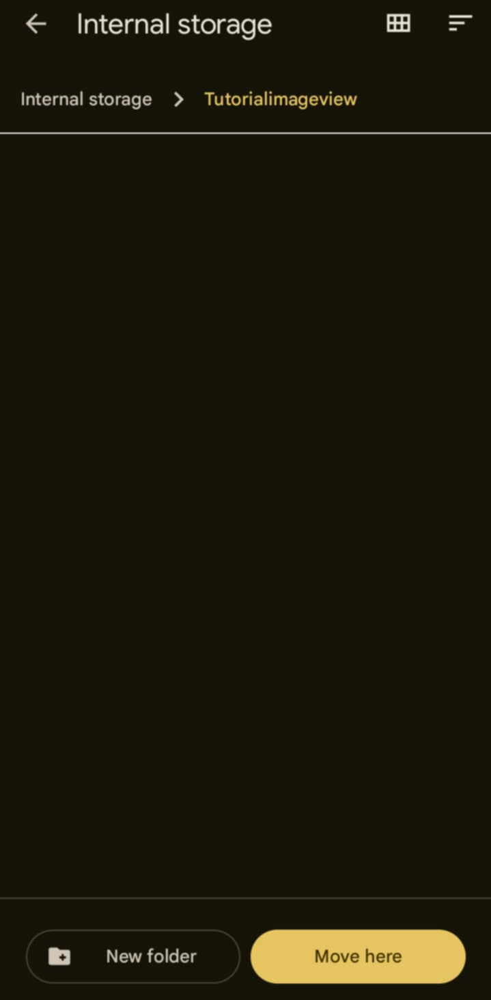
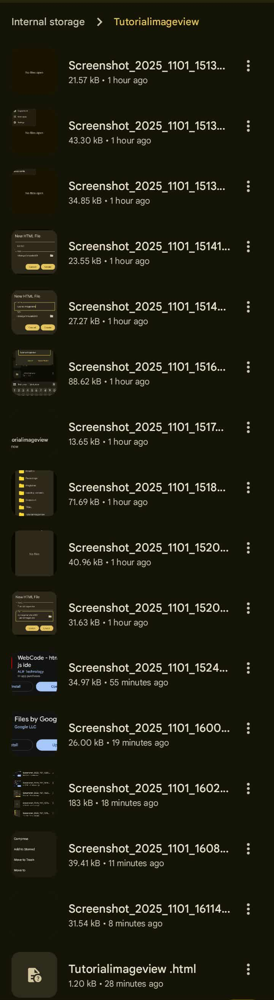
Access the folder/file location and find the picture to be included. Tap the three dots and tap “ Rename “ and copy the name of the picture. You can also change the name of the picture to whatever you want.
After copying the name of the picture, that will be the URL to be placed in the website code.
Like this:
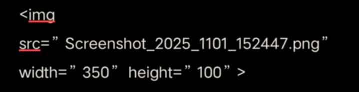
⚠️Remember:
- The file code and the pictures to be placed on the website need to be in the same folder.
- You can also change the name of the pictures according to your preference. There are instances where the picture won't be viewable even if the copied file name is correct. If this happens, you should change the name of the picture to one that is unique (not the same as any other).
- These pictures can only be viewed when you use your device or the device where you placed the pictures or where you created the website.
- The pictures will not be viewable if the file code is shared and opened on a different device, because the pictures were not created on the device where it was opened. However, these pictures can be viewed if the images used are from online or uploaded on different technology platforms where everyone can see them, or if they are public.
⚠️Remember:
- The file code and the pictures to be placed on the website need to be in the same folder.
- You can also change the name of the pictures according to your preference. There are instances where the picture won't be viewable even if the copied file name is correct. If this happens, you should change the name of the picture to one that is unique (not the same as any other).
- These pictures can only be viewed when you use your device or the device where you placed the pictures or where you created the website.
- The pictures will not be viewable if the file code is shared and opened on a different device, because the pictures were not created on the device where it was opened. However, these pictures can be viewed if the images used are from online or uploaded on different technology platforms where everyone can see them, or if they are public.